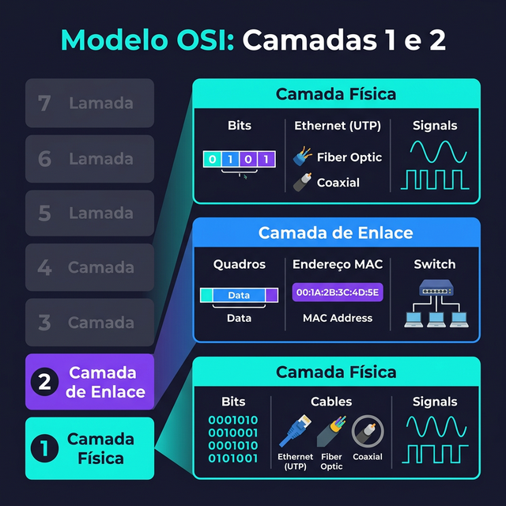
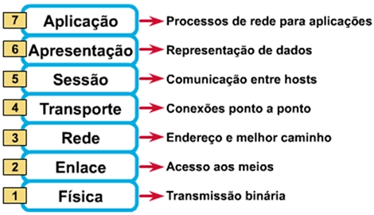
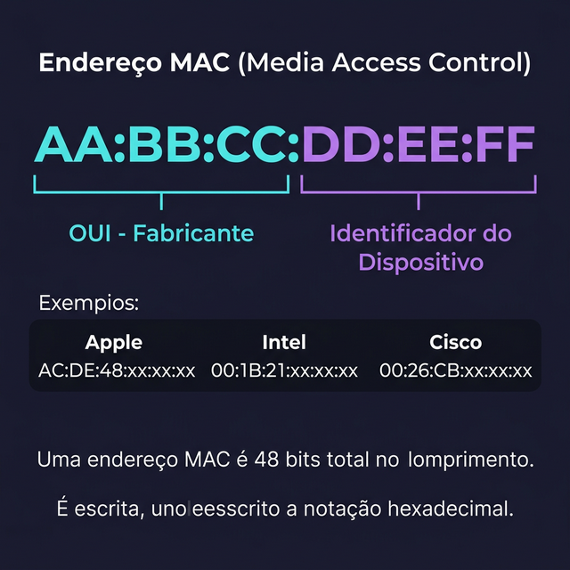
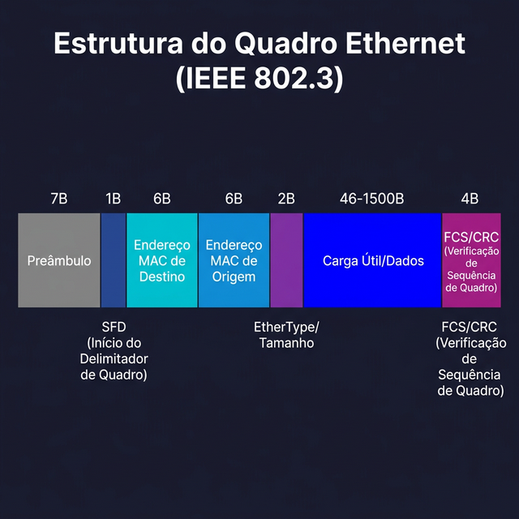
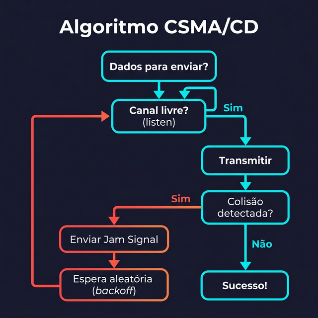
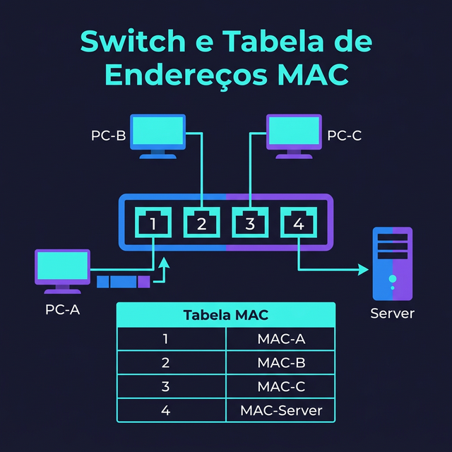

🔌 Aula 04: Camada Física, Camada de Enlace e Ethernet
Disciplina: Redes de Computadores I (Cód. 49325) | Curso: Sistemas de Informação, Uniube Semana 3 | 02/03/2026 | Prof. Romualdo Mathias Filho
🎯 0. Objetivo da Aula
Ao final desta aula, o aluno deve ser capaz de:
- Descrever as funções da Camada Física (camada 1) e da Camada de Enlace (camada 2) do modelo OSI
- Explicar o que é um endereço MAC e como ele difere de um endereço IP
- Analisar a estrutura de um quadro Ethernet (IEEE 802.3) e identificar cada campo
- Comparar os mecanismos de controle de acesso ao meio CSMA/CD e CSMA/CA
- Descrever o funcionamento de um switch e sua tabela de endereços MAC
🔄 1. Recapitulação
| Aula | Conceito | Definição |
|---|---|---|
| 02 | Rede de computadores | Conjunto de dispositivos autônomos interconectados que compartilham dados e recursos |
| 02 | Classificação (LAN/MAN/WAN) | Redes categorizadas por abrangência geográfica |
| 02 | Protocolos | Regras que governam formato, ordem e ações na troca de mensagens |
| 03 | Topologia física | Arranjo real dos cabos e dispositivos no espaço |
| 03 | Topologia lógica | Caminho que os dados percorrem entre os nós |
| 03 | Meios de transmissão | Guiados (par trançado, coaxial, fibra) e não guiados (Wi-Fi, Bluetooth, satélite) |
Conexão: nas Aulas 02 e 03 estudamos o que compõe uma rede, como ela é organizada (topologias) e por onde os dados trafegam (meios). Hoje vamos descer um nível e entender como os bits se transformam em quadros inteligentes que sabem chegar ao destino correto dentro de uma rede local. Estamos entrando nas duas primeiras camadas do modelo OSI.
🏗️ 2. Contextualização: Onde Estamos no Modelo OSI?
Definição: O modelo OSI (Open Systems Interconnection), padronizado pela ISO em 1984, divide a comunicação em rede em 7 camadas, cada uma com responsabilidades distintas (Tanenbaum, Cap. 1, Seção 1.4). Hoje focaremos nas duas camadas inferiores:
| Camada | Nome | Unidade de Dados | Função Principal |
|---|---|---|---|
| 7 | Aplicação | Mensagem | Interface com o usuário (HTTP, DNS, SMTP) |
| 6 | Apresentação | Mensagem | Formatação, criptografia, compressão |
| 5 | Sessão | Mensagem | Controle de sessões e diálogos |
| 4 | Transporte | Segmento | Entrega fim a fim, confiabilidade (TCP, UDP) |
| 3 | Rede | Pacote | Endereçamento lógico e roteamento (IP) |
| 2 | Enlace de Dados | Quadro (Frame) | Entrega nó a nó, controle de erros, endereço MAC |
| 1 | Física | Bit | Transmissão bruta de bits pelo meio físico |


Modelo OSI com 7 camadas empilhadas, camadas 1 (Física) e 2 (Enlace) destacadas e expandidas com ícones de bits, quadros, MAC address e switch.
Analogia: Pense no modelo OSI como o processo de enviar uma carta. A camada 7 (Aplicação) é você escrevendo a carta. A camada 3 (Rede) é o CEP que indica a cidade destino. A camada 2 (Enlace) é o nome na caixa de correio do prédio, que identifica a pessoa exata naquele endereço. A camada 1 (Física) é o caminhão, o avião ou a moto que transporta fisicamente a carta.
⚡ 3. Camada Física (Camada 1)
Definição: A camada física (Tanenbaum, Cap. 2, Seção 2.1) é responsável pela transmissão de bits brutos (0s e 1s) através do meio de comunicação. Ela define as especificações elétricas, mecânicas, funcionais e procedimentais para ativar e manter a conexão física entre dispositivos.
| Característica | Detalhe |
|---|---|
| Unidade de dados | Bit (0 ou 1) |
| O que define | Como os bits são representados no meio (tensão, luz, frequência) |
| Especificações elétricas | Níveis de tensão (ex: +5V = 1, 0V = 0 em TTL), modulação |
| Especificações mecânicas | Formato do conector (RJ-45, LC, BNC), pinagem dos cabos |
| Especificações funcionais | Significado de cada pino (ex: pinos 1,2 = TX; pinos 3,6 = RX no RJ-45) |
| Codificação | Manchester, 4B/5B, 8B/10B, PAM-4 (como bits são codificados no sinal) |
| Sinalização | Banda base (Ethernet) ou banda larga (TV a cabo) |
| Taxa de dados | Medida em bps: 100 Mbps, 1 Gbps, 10 Gbps, etc. |
💡 Exemplos Reais no Cotidiano
- Cabo Ethernet CAT6: transmite sinais elétricos codificados como variações de tensão nos pares de cobre
- Fibra óptica: transmite pulsos de luz (LED ou laser) pelo núcleo de vidro, representando 0s e 1s
- Wi-Fi: ondas de rádio moduladas (OFDM) carregam os bits entre o Access Point e o dispositivo
- Conector RJ-45: a especificação mecânica define 8 pinos organizados nos padrões T568A ou T568B
📌 Padrões de Cabeamento Ethernet
| Padrão | Velocidade | Meio | Distância | Nome Comum |
|---|---|---|---|---|
| 10BASE-T | 10 Mbps | Par trançado CAT3+ | 100 m | Ethernet |
| 100BASE-TX | 100 Mbps | Par trançado CAT5+ | 100 m | Fast Ethernet |
| 1000BASE-T | 1 Gbps | Par trançado CAT5e+ | 100 m | Gigabit Ethernet |
| 10GBASE-T | 10 Gbps | Par trançado CAT6a | 100 m | 10 Gigabit Ethernet |
| 1000BASE-SX | 1 Gbps | Fibra multimodo | 550 m | Gigabit Ethernet (fibra) |
| 10GBASE-LR | 10 Gbps | Fibra monomodo | 10 km | 10GbE Long Reach |
Analogia: A camada física é como a infraestrutura de transporte: a estrada (meio), o tipo de veículo (sinalização), a largura da pista (taxa de dados) e as regras de como os veículos se movem (codificação). Ela não se preocupa com o que está sendo transportado, apenas com a entrega bruta do sinal.
🔗 4. Camada de Enlace de Dados (Camada 2)
Definição: A camada de enlace (Tanenbaum, Cap. 3, Seção 3.1) transforma o serviço “bruto” da camada física em uma comunicação confiável entre nós adjacentes. Ela organiza os bits em quadros (frames), adiciona endereçamento local (MAC) e implementa detecção de erros.
| Característica | Detalhe |
|---|---|
| Unidade de dados | Quadro (frame) |
| Endereçamento | Endereço MAC (Media Access Control), 48 bits |
| Enquadramento | Organiza bits em quadros com delimitadores de início/fim |
| Controle de erros | CRC (Cyclic Redundancy Check) para detectar erros de transmissão |
| Controle de acesso ao meio | Define quem pode transmitir e quando (CSMA/CD, CSMA/CA, Token) |
| Controle de fluxo | Evita que um transmissor rápido sobrecarregue um receptor lento |
| Subcamadas (IEEE) | LLC (Logical Link Control, 802.2) e MAC (Media Access Control, 802.3/802.11) |
💡 Exemplos Reais no Cotidiano
- Switch Ethernet: opera na camada 2, encaminhando quadros com base no endereço MAC de destino
- Placa de rede (NIC): implementa a camada 2, encapsulando dados em quadros Ethernet e verificando CRC
- Wi-Fi (802.11): usa a camada de enlace para gerenciar o acesso ao meio sem fio via CSMA/CA
- Erro detectado: quando um quadro chega corrompido, o CRC falha e o quadro é descartado silenciosamente
📌 Subcamadas da Camada 2 (Padrão IEEE)
| Subcamada | Padrão | Função |
|---|---|---|
| LLC (Logical Link Control) | IEEE 802.2 | Multiplexação de protocolos (identificar se o quadro carrega IPv4, IPv6, ARP), controle de fluxo |
| MAC (Media Access Control) | IEEE 802.3 (Ethernet), 802.11 (Wi-Fi) | Endereçamento físico (MAC), enquadramento, controle de acesso ao meio |
Analogia: Se a camada física é o caminhão de entrega, a camada de enlace é o despachante do armazém local. Ele embala os produtos em caixas (enquadramento), coloca a etiqueta com o endereço do vizinho (MAC de destino), confere se a caixa chegou intacta (CRC) e organiza a fila de despacho para não haver colisão na doca (controle de acesso ao meio).
🏷️ 5. Endereço MAC (Media Access Control)
Definição: O endereço MAC (Kurose, Cap. 6, Seção 6.4) é um identificador único de 48 bits atribuído à interface de rede (NIC) pelo fabricante. É gravado na ROM da placa de rede e usado pela camada 2 para identificar origem e destino dentro da rede local.
| Característica | Detalhe |
|---|---|
| Tamanho | 48 bits (6 bytes) |
| Formato | Hexadecimal separado por ”:” ou ”-” (ex: AA:BB:CC:DD:EE:FF) |
| Primeiros 3 bytes | OUI (Organizationally Unique Identifier): identifica o fabricante |
| Últimos 3 bytes | Identificador do dispositivo (atribuído pelo fabricante) |
| Endereço Broadcast | FF:FF:FF:FF:FF:FF (enviado para todos os nós da rede local) |
| Escopo | Local: válido apenas dentro do domínio de broadcast (rede local) |
| Diferença do IP | MAC é físico/fixo (camada 2); IP é lógico/mutável (camada 3) |

Endereço MAC “AA:BB:CC:DD:EE:FF” com destaque visual: primeiros 3 bytes = OUI (fabricante) em ciano, últimos 3 bytes = ID do dispositivo em roxo. Exemplos de OUI de Apple, Intel e Cisco.
💡 Exemplos Reais no Cotidiano
- Filtragem MAC no roteador: alguns roteadores domésticos permitem restringir o acesso Wi-Fi a uma lista de MACs autorizados (embora contornável via MAC spoofing)
- Identificação do fabricante: o OUI
00:50:56identifica uma interface VMware,AC:DE:48identifica Apple,00:1B:21identifica Intel - Comando para descobrir: no Windows,
ipconfig /allexibe o “Endereço Físico” (MAC); no Linux,ip link show
📌 MAC vs. IP: Tabela Comparativa
| Aspecto | Endereço MAC | Endereço IP |
|---|---|---|
| Camada OSI | 2 (Enlace) | 3 (Rede) |
| Tamanho | 48 bits (6 bytes) | 32 bits (IPv4) ou 128 bits (IPv6) |
| Formato | Hexadecimal (AA:BB:CC:DD:EE:FF) | Decimal pontuado (192.168.1.10) |
| Atribuição | Fabricante (gravado na NIC) | Administrador ou DHCP (configurável) |
| Escopo | Rede local (domínio de broadcast) | Global (roteável entre redes) |
| Mutabilidade | Fixo (mas pode ser alterado via software) | Dinâmico (muda conforme a rede) |
| Analogia | CPF (identidade única da placa de rede) | Endereço residencial (pode mudar ao se mudar) |
Analogia: O endereço MAC é como o CPF de uma pessoa: único, atribuído de fábrica (nascimento) e não muda quando ela se muda. O endereço IP é como o endereço residencial: depende de onde a pessoa está morando e pode mudar quando ela se muda para outra rede.
📦 6. O Padrão Ethernet (IEEE 802.3)
Definição: Ethernet (Kurose, Cap. 6, Seção 6.4) é a tecnologia dominante para redes locais (LANs) desde os anos 1980. Padronizada pelo IEEE como 802.3, ela define o formato do quadro, o esquema de endereçamento (MAC) e o mecanismo de acesso ao meio (originalmente CSMA/CD).
| Característica | Detalhe |
|---|---|
| Origem | Criada na Xerox PARC por Robert Metcalfe em 1973 |
| Padronização | IEEE 802.3 (1983); múltiplas evoluções até 802.3bs (400 Gbps) |
| Velocidades | 10 Mbps → 100 Mbps → 1 Gbps → 10 Gbps → 25/40/100/400 Gbps |
| Topologia original | Barramento (cabo coaxial) com CSMA/CD |
| Topologia atual | Estrela (switch) com full-duplex (sem colisões) |
| Meio físico | Par trançado (mais comum), fibra óptica, coaxial (obsoleto) |
| Conectores | RJ-45 (par trançado), LC/SC (fibra) |
📐 6.1 Estrutura do Quadro Ethernet
Definição: O quadro Ethernet (Tanenbaum, Cap. 4, Seção 4.3) é a unidade de dados da camada 2. Ele encapsula os dados da camada superior (pacote IP) e adiciona cabeçalho e trailer para entrega local.

Barra horizontal dividida em seções coloridas mostrando cada campo do quadro Ethernet com tamanhos em bytes.
| Campo | Tamanho | Função |
|---|---|---|
| Preâmbulo | 7 bytes | Sequência de bits alternados (10101010…) para sincronizar os relógios do transmissor e receptor |
| SFD (Start Frame Delimiter) | 1 byte | Marca o início efetivo do quadro (10101011) |
| MAC Destino | 6 bytes | Endereço MAC do dispositivo de destino |
| MAC Origem | 6 bytes | Endereço MAC do dispositivo de origem |
| Tipo/Tamanho (EtherType) | 2 bytes | Identifica o protocolo encapsulado (0x0800 = IPv4, 0x0806 = ARP, 0x86DD = IPv6) |
| Dados (Payload) | 46 a 1500 bytes | Conteúdo útil: pacote IP, quadro ARP, etc. |
| FCS (Frame Check Sequence) | 4 bytes | CRC-32 para detecção de erros de transmissão |
📌 Observações Importantes
- MTU (Maximum Transmission Unit): o payload máximo de 1500 bytes define o MTU padrão Ethernet. Pacotes IP maiores precisam ser fragmentados
- Tamanho mínimo: 64 bytes (sem preâmbulo/SFD). Se o payload for menor que 46 bytes, são adicionados bytes de preenchimento (padding)
- Jumbo Frames: alguns ambientes (data centers) usam quadros com payload de até 9000 bytes para aumentar a eficiência
Analogia: O quadro Ethernet é como um envelope padronizado dos Correios. O preâmbulo/SFD é a marca d’água que identifica como “envelope oficial”. O MAC de destino é o destinatário, o MAC de origem é o remetente, o EtherType indica o tipo de conteúdo (carta, documento, foto), o payload é o conteúdo em si, e o FCS é um código de verificação que garante que o envelope não foi adulterado no caminho.
🚦 7. Controle de Acesso ao Meio: CSMA/CD e CSMA/CA
🔵 7.1 CSMA/CD (Carrier Sense Multiple Access with Collision Detection)
Definição: O CSMA/CD (Tanenbaum, Cap. 4, Seção 4.3) é o mecanismo de acesso ao meio originalmente usado pelo Ethernet em redes half-duplex (barramento ou hubs). Ele permite que múltiplos dispositivos compartilhem o mesmo meio, detectando e tratando colisões.

Fluxograma do algoritmo CSMA/CD: escutar canal → canal livre? → transmitir → colisão? → jam signal → espera aleatória (backoff) → repetir.
Funcionamento passo a passo:
- Escutar (Carrier Sense): antes de transmitir, o dispositivo verifica se o meio está livre
- Transmitir: se o canal estiver livre, inicia a transmissão
- Detectar colisão (Collision Detection): se dois dispositivos transmitirem simultaneamente, ambos detectam a colisão
- Jam Signal: sinal de 32 bits enviado para garantir que todos os nós saibam da colisão
- Backoff exponencial: os dispositivos aguardam um tempo aleatório (fórmula: 0 a 2ⁿ-1 slots, onde n = número de tentativas) antes de retransmitir
- Retransmitir: após o tempo de espera, volta ao passo 1
| Característica | Detalhe |
|---|---|
| Tecnologia | Ethernet half-duplex (hubs, barramento) |
| Tipo | Detecção de colisão após transmissão |
| Eficiência | Degrada com muitos nós e alto tráfego |
| Status atual | Obsoleto em LANs modernas (switches full-duplex eliminam colisões) |
🟢 7.2 CSMA/CA (Carrier Sense Multiple Access with Collision Avoidance)
Definição: O CSMA/CA (Tanenbaum, Cap. 4, Seção 4.4) é usado em redes sem fio (IEEE 802.11). Em redes wireless, detectar colisões durante a transmissão é impraticável (problema do terminal oculto), então o mecanismo busca evitar colisões em vez de detectá-las.
Funcionamento passo a passo:
- Escutar (Carrier Sense): o dispositivo verifica se o meio wireless está livre
- IFS (Interframe Space): se o canal estiver livre, aguarda um intervalo de tempo antes de transmitir
- RTS/CTS (opcional): envia um pedido de reserva (Request to Send) e aguarda confirmação (Clear to Send)
- Transmitir: envia o quadro
- ACK: o receptor envia um quadro de confirmação (acknowledgment). Se não receber ACK, assume que houve colisão e retransmite
| Característica | Detalhe |
|---|---|
| Tecnologia | Wi-Fi (IEEE 802.11) |
| Tipo | Prevenção de colisão antes da transmissão |
| Mecanismo extra | RTS/CTS para resolver o problema do terminal oculto |
| ACK obrigatório | Sim, pois não é possível detectar colisão durante a transmissão |
📌 CSMA/CD vs. CSMA/CA: Comparação
| Aspecto | CSMA/CD | CSMA/CA |
|---|---|---|
| Meio | Cabeado (Ethernet half-duplex) | Sem fio (Wi-Fi) |
| Estratégia | Detecta a colisão e retransmite | Evita a colisão antes de transmitir |
| Confirmação (ACK) | Não usa ACK na camada 2 | Usa ACK obrigatório |
| Problema resolvido | Múltiplos acessos ao meio compartilhado | Terminal oculto em wireless |
| Eficiência em carga alta | Degrada significativamente | Degrada, mas com mais controle |
| Status atual | Obsoleto (switches full-duplex) | Ativo em todas as redes Wi-Fi |
Analogia: CSMA/CD é como uma conversa em grupo onde todos falam quando acham que há silêncio. Se dois falam ao mesmo tempo (colisão), ambos param e esperam um tempo aleatório antes de tentar novamente. CSMA/CA é como levantar a mão antes de falar: você sinaliza que quer falar (RTS), espera a autorização (CTS) e, após falar, espera a confirmação de que foi ouvido (ACK).
🔀 8. O Switch e a Tabela de Endereços MAC
Definição: O switch Ethernet (Kurose, Cap. 6, Seção 6.4) é um dispositivo de camada 2 que encaminha quadros de forma inteligente, usando uma tabela de endereços MAC (também chamada tabela CAM) para direcionar cada quadro apenas à porta onde está o dispositivo de destino.

Switch com 4 portas numeradas, cada uma conectada a um dispositivo (PC-A, PC-B, PC-C, Servidor). Abaixo, tabela MAC mostrando a associação porta → endereço MAC. Seta mostrando quadro de PC-A encaminhado apenas para a porta do Servidor.
📌 Como o Switch Aprende e Encaminha
| Etapa | Ação | Descrição |
|---|---|---|
| 1 | Receber quadro | O switch recebe um quadro na porta X |
| 2 | Aprender | Registra o MAC de origem do quadro associado à porta X na tabela MAC |
| 3 | Consultar tabela | Procura o MAC de destino na tabela |
| 4a | Encaminhar (unicast) | Se encontrar o MAC de destino, envia o quadro apenas pela porta correspondente |
| 4b | Inundar (flooding) | Se não encontrar o MAC de destino, envia o quadro por todas as portas (exceto a de origem) |
| 5 | Envelhecimento | Entradas na tabela MAC expiram após um tempo (padrão: 300 segundos) se não forem renovadas |
📌 Exemplo Passo a Passo
Considere um switch com 4 portas e tabela MAC inicialmente vazia:
| Passo | Evento | Tabela MAC Após |
|---|---|---|
| 1 | PC-A (porta 1) envia quadro para PC-C | Porta 1 → MAC-A |
| 2 | Switch não conhece MAC-C: flooding para portas 2, 3 e 4 | Porta 1 → MAC-A |
| 3 | PC-C (porta 3) responde para PC-A | Porta 1 → MAC-A, Porta 3 → MAC-C |
| 4 | Switch conhece MAC-A: encaminha apenas para porta 1 | Porta 1 → MAC-A, Porta 3 → MAC-C |
| 5 | PC-B (porta 2) envia para PC-C | Porta 1 → MAC-A, Porta 2 → MAC-B, Porta 3 → MAC-C |
| 6 | Switch conhece MAC-C: encaminha apenas para porta 3 | Sem alteração |
💡 Exemplos Reais no Cotidiano
- Switch gerenciável: administradores podem visualizar a tabela MAC via CLI com comandos como
show mac address-table(Cisco IOS) - Segurança (Port Security): switches corporativos podem limitar o número de MACs por porta, prevenindo ataques de MAC flooding
- VLANs: switches gerenciáveis segmentam a rede em VLANs, criando domínios de broadcast separados na camada 2
📌 Hub vs. Switch: Comparação
| Aspecto | Hub | Switch |
|---|---|---|
| Camada OSI | 1 (Física) | 2 (Enlace) |
| Encaminhamento | Replica para todas as portas | Encaminha apenas para a porta de destino |
| Colisões | Todas as portas compartilham o domínio de colisão | Cada porta é um domínio de colisão separado |
| Tabela MAC | Não possui | Aprende e consulta automaticamente |
| Modo de operação | Half-duplex (CSMA/CD ativo) | Full-duplex (sem colisões) |
| Status | Obsoleto | Padrão em todas as LANs modernas |
Analogia: Um hub é como um megafone em uma sala: quando um fala, todos ouvem, mesmo quem não é o destinatário. Um switch é como um telefonista de um hotel: ele sabe o ramal de cada quarto (tabela MAC) e conecta a ligação diretamente ao destinatário correto, sem incomodar os outros hóspedes.
⚖️ 9. Comparação Estrutural: Camada 1 vs. Camada 2
| Critério | Camada 1 (Física) | Camada 2 (Enlace) |
|---|---|---|
| Unidade de dados | Bit | Quadro (frame) |
| Endereçamento | Nenhum | Endereço MAC (48 bits) |
| Função principal | Transmissão bruta de bits pelo meio | Entrega confiável entre nós adjacentes |
| Detecção de erros | Nenhuma | CRC-32 (FCS) |
| Dispositivo típico | Repetidor, hub, cabo, conector | Switch, bridge, placa de rede (NIC) |
| Exemplo de padrão | 1000BASE-T, 10GBASE-LR | IEEE 802.3 (Ethernet), IEEE 802.11 (Wi-Fi) |
| Preocupação | Sinal, voltagem, frequência, modulação | Quadros, MAC, controle de acesso, controle de erros |
🔮 10. Tendências Contemporâneas
| Tendência | Descrição | Impacto |
|---|---|---|
| Ethernet 800GbE (IEEE 802.3df) | Próximo padrão Ethernet para 800 Gbps e 1,6 Tbps em data centers | Reduz a necessidade de agregação de enlaces, simplificando a topologia |
| TSN (Time-Sensitive Networking) | Extensão do Ethernet (IEEE 802.1) para tráfego em tempo real com latência garantida | Viabiliza Ethernet em automação industrial e veículos autônomos, substituindo redes proprietárias |
| Wi-Fi 7 (802.11be) e CSMA/CA evoluído | MLO (Multi-Link Operation): transmissão simultânea em múltiplas frequências | Reduz latência e aumenta confiabilidade do acesso ao meio sem fio |
| MACsec (IEEE 802.1AE) | Criptografia nativa na camada 2 (enlace) para redes Ethernet | Proteção contra interceptação e adulteração de quadros na rede local |
| Smart NICs / DPUs | Placas de rede com processadores dedicados que executam funções de camada 2 e acima em hardware | Descarregam o processamento de rede da CPU do servidor, aumentando performance em data centers |
📋 11. Resumo Estrutural
| Conceito | Definição em Uma Frase |
|---|---|
| Camada Física (1) | Responsável pela transmissão bruta de bits pelo meio de comunicação |
| Camada de Enlace (2) | Organiza bits em quadros, adiciona endereçamento MAC e detecta erros |
| Endereço MAC | Identificador único de 48 bits da interface de rede, atribuído pelo fabricante |
| OUI | Primeiros 3 bytes do MAC que identificam o fabricante da placa de rede |
| Quadro Ethernet | Unidade de dados da camada 2 com preâmbulo, MACs, EtherType, payload e FCS |
| MTU | Tamanho máximo do payload Ethernet: 1500 bytes (padrão) |
| CSMA/CD | Acesso ao meio com detecção de colisão, usado em Ethernet half-duplex (obsoleto) |
| CSMA/CA | Acesso ao meio com prevenção de colisão, usado em redes Wi-Fi |
| Switch | Dispositivo de camada 2 que encaminha quadros usando tabela de endereços MAC |
| Flooding | Encaminhamento para todas as portas quando o MAC de destino é desconhecido |
| Full-duplex | Modo de operação onde transmissão e recepção ocorrem simultaneamente, eliminando colisões |
🧩 12. Atividade Prática (PBL)
📌 Cenário: Diagnóstico de Rede no Escritório
Você é o técnico de TI de um escritório com 8 computadores conectados a um switch de 16 portas. O gerente relata os seguintes problemas:
Problema 1: O PC-05 não consegue acessar a impressora de rede, mas acessa a internet normalmente.
Problema 2: Ao conectar um hub de 4 portas na porta 12 do switch (para expandir a rede), os usuários desse hub reclamam de lentidão e desconexões intermitentes.
Problema 3: O estagiário pergunta: “Se o endereço MAC é único e fixo, por que precisamos de endereço IP?”
Tarefas:
- Analise o Problema 1: O que pode causar a falha de comunicação entre PC-05 e a impressora, mas não com a internet? Considere camadas 1 e 2 no diagnóstico
- Explique o Problema 2: Por que o hub causa lentidão? Relacione com domínios de colisão, CSMA/CD e full-duplex vs. half-duplex
- Responda ao estagiário (Problema 3): Elabore uma explicação técnica, usando a analogia CPF vs. endereço residencial e o conceito de roteamento entre redes
- Simule a tabela MAC: Considere que o switch acabou de ser ligado (tabela vazia). PC-01 (porta 1) envia um quadro para PC-08 (porta 8), que responde. Em seguida, PC-03 (porta 3) envia para PC-01. Descreva, quadro a quadro, como a tabela MAC evolui
- Comando prático: Execute
ipconfig /all(Windows) ouip link show(Linux) no seu computador e identifique o endereço MAC da sua placa de rede. Pesquise o fabricante usando o OUI em macvendors.com
🚀 13. Desafio (Sala de Aula Invertida)
Para a próxima aula (Semana 4: Modelo OSI vs. TCP/IP, Jornada do Pacote):
- Leia sobre as 7 camadas do modelo OSI e as 4 camadas do modelo TCP/IP, e crie uma tabela comparativa entre os dois modelos
- Pesquise: qual é a diferença entre encapsulamento e desencapsulamento de dados? Descreva o que acontece com os dados à medida que descem do nível 7 (Aplicação) ao nível 1 (Física) e vice-versa
- Investigue o protocolo ARP (Address Resolution Protocol): qual é sua função e como ele conecta a camada 2 (MAC) à camada 3 (IP)?
- Experimento: execute
arp -ano Prompt de Comando e analise o resultado. Quais endereços MAC e IP aparecem? O que é a entrada de broadcast?
Dica: consulte Tanenbaum, Cap. 1 (Seção 1.4: Modelos de Referência) e Kurose, Cap. 1 (Seção 1.5: Camadas de Protocolo e Modelos de Serviço).
📚 14. Referências Bibliográficas
📖 Referências Obrigatórias
| Autor | Obra | Capítulo/Seção Utilizada |
|---|---|---|
| TANENBAUM, A. S.; FEAMSTER, N.; WETHERALL, D. J. | Redes de Computadores. 6. ed. Pearson, 2021 | Cap. 2 (Seção 2.1: Camada Física), Cap. 3 (Seção 3.1: Camada de Enlace), Cap. 4 (Seções 4.3: Ethernet, 4.4: 802.11) |
| KUROSE, J. F. | Redes de Computadores e a Internet. 8. ed. Pearson, 2021 | Cap. 6: A Camada de Enlace e Redes Locais (Seções 6.1 a 6.4) |
| LACERDA, P. S. P. et al. | Projeto de Redes de Computadores. Sagah, 2021 | Cap. 3: Cabeamento estruturado e padrões Ethernet |
📖 Referências Complementares
| Autor | Obra | Relevância |
|---|---|---|
| MAITINO NETO, R. et al. | Sistemas Operacionais de Redes Abertas. Sagah, 2020 | Interfaces de rede e drivers na camada de enlace (Cap. 4) |
| ROHLING, L. J. | Segurança de Redes de Computadores. Contentus, 2020 | Ataques na camada 2: MAC flooding, ARP spoofing, VLAN hopping (Cap. 3) |
🔗 Links Úteis
| Recurso | Descrição | Link |
|---|---|---|
| IEEE 802.3 Standards | Documentação oficial dos padrões Ethernet | ieee802.org/3 |
| MAC Address Lookup | Consulta de fabricante pelo OUI do endereço MAC | macvendors.com |
| Cisco Networking Academy | Cursos de fundamentos de redes e switching | netacad.com |
| Wireshark | Analisador de protocolos, permite capturar e inspecionar quadros Ethernet ao vivo | wireshark.org |
| Submarinecablemap | Mapa dos cabos submarinos (infraestrutura física da internet global) | submarinecablemap.com |